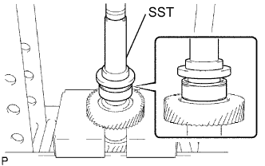
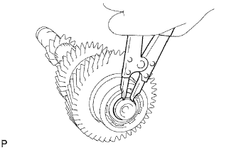

ЗАДАЮЩАЯ ШЕСТЕРНЯ > ПОВТОРНАЯ СБОРКА |
| 1. УСТАНОВИТЕ ПЕРЕДНИЙ ПОДШИПНИК ЗАДАЮЩЕЙ ШЕСТЕРНИ |
|  |
С помощью SST и пресса установите передний подшипник в задающую шестерню.
| 2. УСТАНОВИТЕ ПРУЖИННОЕ СТОПОРНОЕ КОЛЬЦО ПЕРЕДНЕГО ПОДШИПНИКА ЗАДАЮЩЕЙ ШЕСТЕРНИ № 2 |
Подберите такое пружинное стопорное кольцо, при котором обеспечивается номинальный зазор между ним и задающей шестерней.
| Метка | Толщина |
| А | 2,05 - 2,10 мм (0,0807 - 0,0827 дюйма) |
| B | 2,10 - 2,15 мм (0,0827 - 0,0846 дюйма) |
| C | 2,15 - 2,20 мм (0,0846 - 0,0866 дюйма) |
| D | 2,20 - 2,25 мм (0,0866 - 0,0886 дюйма) |
| E | 2,25 - 2,30 мм (0,0886 - 0,0906 дюйма) |
| F | 2,30 - 2,35 мм (0,0906 - 0,0925 дюйма) |
|  |
С помощью съемника стопорных колец установите пружинное стопорное кольцо.